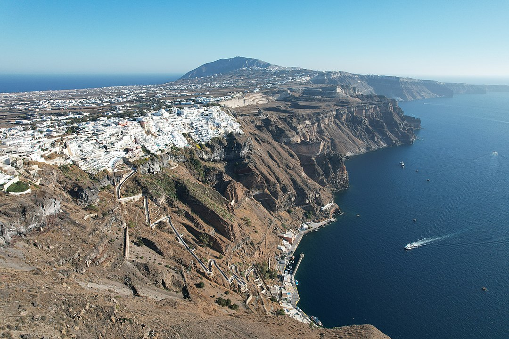
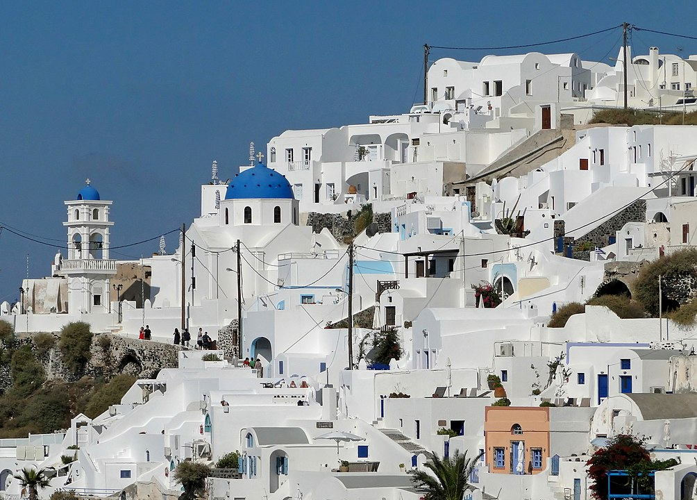
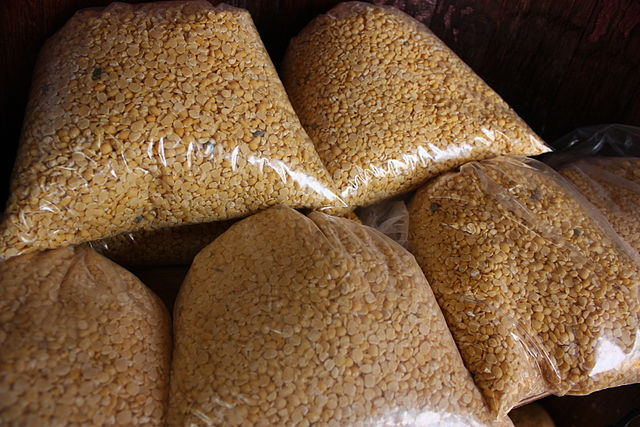
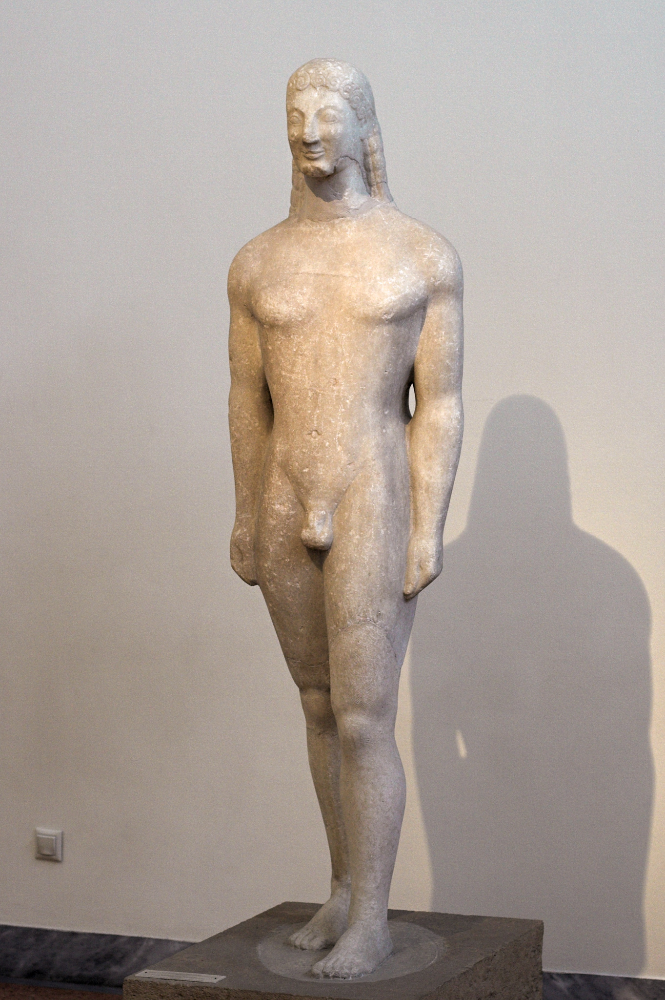

Santorini's architecture is famous for its stunning white-washed buildings with blue domes, reflecting the traditional Cycladic style.

Santorini's cuisine is a unique blend of Mediterranean flavors, featuring fresh seafood, locally-grown vegetables, and the famous fava beans.

Santorini hosts vibrant festivals celebrating everything from religious events to wine harvests, offering a deep dive into local traditions.

The island is renowned for its wine, especially the Assyrtiko grape variety, cultivated in its unique volcanic soil.

Santorini has a rich history dating back to ancient times, with archaeological sites like Akrotiri offering glimpses into its storied past.